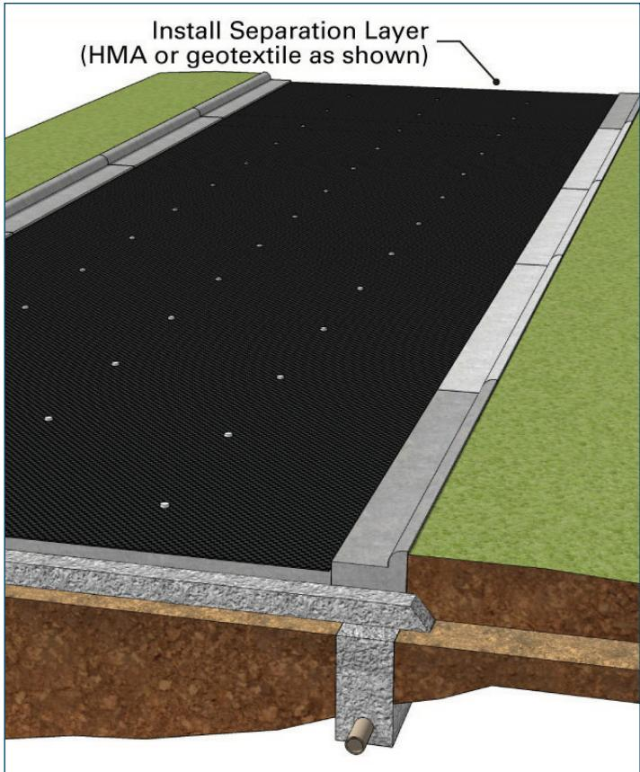
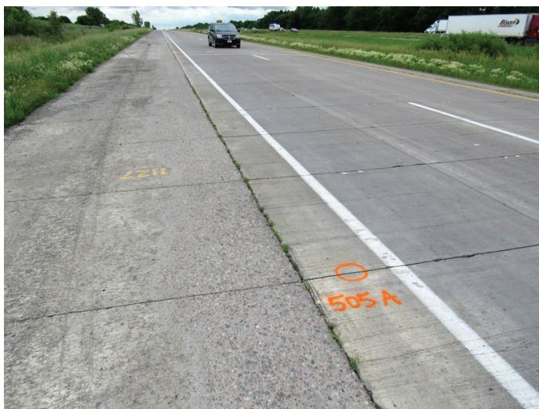
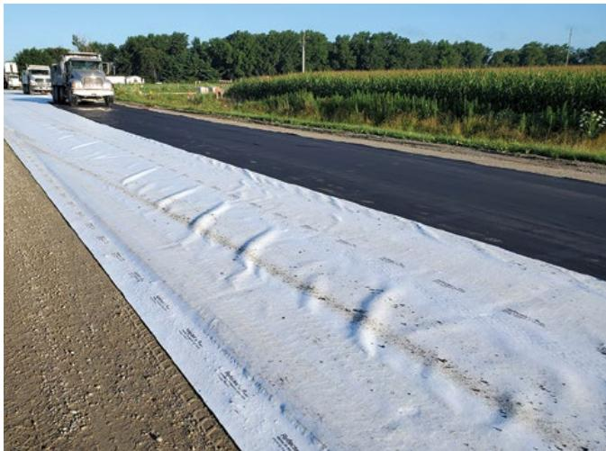
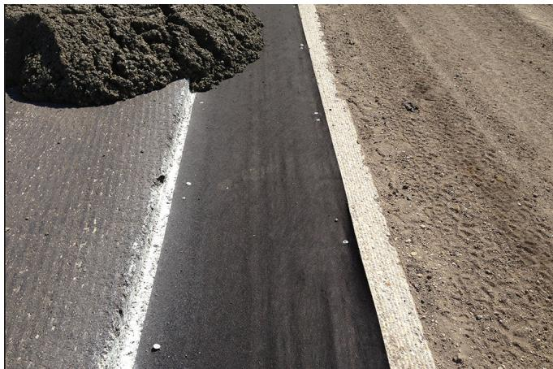
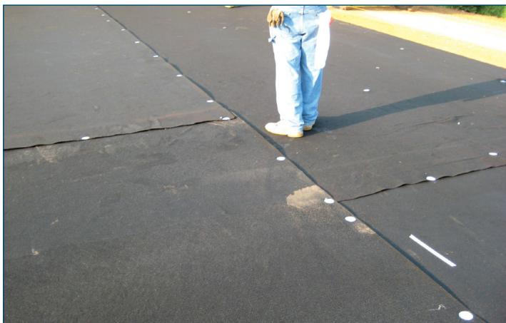
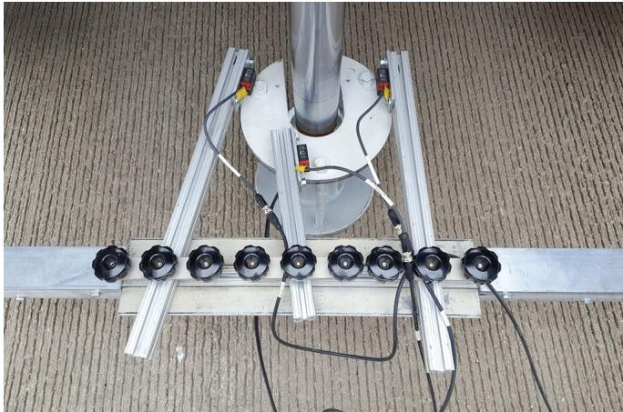

Geotextile Separation Layer Design
Geotextile separation layer design is the engineering process of specifying a geotextile interlayer for unbonded concrete overlays so that the new slab is isolated from an existing pavement, thereby preserving bearing capacity and preventing upward migration of fine‑soil particles while providing reliable drainage. The fabric creates a shear plane that decouples movements of the underlying structure, supplies a uniform elastic cushion that reduces bearing stresses and mitigates reflective cracking, and must retain its separation, bedding and drainage functions over the service life of the pavement [1][2][4]. Design is governed by functional, structural, durability, safety and serviceability objectives and requires that fabric weight and thickness be matched to overlay depth, overlap and edge extensions be provided, anchorage be secured, and temperature‑moisture limits be observed in accordance with AASHTO M 288, the 1993 AASHTO Guide and related specifications [7][8][9].
Sources (9)
Purpose and design objectives
The engineering problem that geotextile separation layer design addresses is the loss of bearing capacity, stability, and drainage in pavement structures caused by an unstable or soft subgrade and upward migration of fine‑soil particles into the aggregate subbase. The guides also identify a fundamental need to prevent inadequate isolation between an existing cementitious pavement and a newly placed unbonded concrete overlay, which otherwise leads to reflective cracking, excessive bearing stresses, and water‑related deterioration. To meet this need, the geotextile separation layer is intended to eliminate the detrimental interaction between an existing concrete pavement and its unbonded overlay by isolating excessive movement of the two slabs, providing a uniform elastic cushion that reduces temperature‑and moisture‑induced stresses, and controlling moisture so that water does not saturate the fabric and bleed through the new concrete. Additionally, it solves two interrelated deficiencies in unbonded concrete overlays: (1) lack of adequate drainage and moisture isolation that can cause premature distress, and (2) absence of a accounted structural contribution from an interlayer, which leads to excessive load transfer at joints and cracks. [1][2][4][6][7][8][9]
[1] — Non-woven Geotextiles (p. 34), Separation Barrier Using Geote… (pp. 32–33), Stabilized (Reinforced) Subgra… (pp. 11–12); [2] — 1. Introduction (pp. 31–48); [4] — Background (pp. 8–9), Introduction (p. 8), Separation Layers inConcrete O… (pp. 10–11), 2016 Survey on Concrete Overla… (pp. 36–45); [6] — Ch. 18 (p. 450); [7] — Ch. 6 (pp. 63–64), Ch. 8 (pp. 83–85), App. A (p. 99); [8] — 5. Condition assessment profile (pp. 43–45); [9] — 2. Overview of Thin Concrete O… (pp. 22–28)
The design of a geotextile separation layer must satisfy a set of interrelated functional, structural, durability, safety, and serviceability objectives. Functionally, the layer is required to isolate the existing pavement from the new concrete slab while allowing water to be removed; as the guides state, “Geotextiles provide three important functions: 1. Separation/stabilization 2. Drainage 3. Reinforcement.” In addition, it must act as a shear plane that decouples movements of the underlying structure, thereby relieving stress and preventing reflective cracking – “Isolation from movement of the underlying pavement—a shear plane relieves stress, mitigates reflective cracking, and may prevent bonding with the existing pavement.” Structurally, the material must be thick enough to cover surface irregularities and provide a compliant bedding that lowers bearing stresses; the guides require it to “serve as a uniform cushion for the overlay to reduce bearing stresses” and to maintain sufficient tensile capacity to stiffen the base. Durability objectives call for long‑term retention of separation, drainage, and reinforcement functions under traffic loading and environmental cycles, which is achieved by proper installation practices and material selection. Safety and serviceability are addressed by ensuring the fabric remains smooth and unwrinkled during construction and service life; consequently, “Secure the geotextile fabric with adequate anchors and/or adhesive to prevent wrinkling.” Collectively, these objectives ensure that the separation layer delivers reliable isolation, drainage, stress relief, and long‑term performance without compromising pavement safety or ride quality. [1][2][4][6][7][8][9]
The following figure illustrates the proper placement of the geotextile separation layer.

Cross-section of a concrete overlay installation showing the placement and drainage details of a geotextile separation layer. [9]The figure displays a cross-sectional view of a pavement structure where a black fabric sheet is installed between the existing subgrade and a new concrete slab, bordered by curbs on both sides. A perforated pipe is visible at the bottom of the curb structure to facilitate drainage, which supports the requirement that “the separation layer is properly drained” to prevent water pressure buildup and subsequent pavement failure.
[1] — Non-woven Geotextiles (p. 34), Separation Barrier Using Geote… (pp. 32–33), Stabilized (Reinforced) Subgra… (pp. 11–12); [2] — 1. Introduction (p. 31); [4] — Separation Layers inConcrete O… (pp. 10–11), 2016 Survey on Concrete Overla… (pp. 37–45); [6] — Ch. 18 (p. 450); [7] — Ch. 6 (pp. 63–64), Ch. 8 (p. 85), App. A (p. 99); [8] — 5. Condition assessment profile (pp. 43–45); [9] — 2. Overview of Thin Concrete O… (pp. 22–28)
Scope and applicability
Geotextile separation layer design is appropriate for a broad range of unbonded concrete overlay situations and related pavement structures. It can be used on Portland‑cement concrete (PCC) pavements, concrete‑on‑concrete unbonded overlays (COC‑U), thin‑concrete overlays, and reinforced‑subgrade sections where the existing subgrade is soft but not excessively wet. The method is applied when isolation of the new slab from the old surface, reduction of interlock or friction, mitigation of reflected cracking, reliable drainage, and a cushion to reduce bearing stresses are required. It may replace traditional 1–2 in. asphalt or dense‑graded HMA interlayers, especially where vertical clearance is limited, thin cost‑effective layers are desired, or rapid construction is needed.
The approach requires that the existing concrete pavement be evaluated for adequate structural condition—typically after repairing major cracks, milling faulting greater than about 0.25 in., cleaning and keeping the surface damp—and that soil conditions have a CBR greater than three with relatively low water tables. Soils meeting these criteria are good candidates for non‑woven geotextiles; when higher tensile strength or shear resistance is needed, woven geotextiles may be used.
Material selections include non‑woven polypropylene filter fabrics of 6–10 oz/yd² (or heavier 10–15 oz/yd² for thicker overlays), with specific weights of 13 oz/yd² for overlays under 5 in. and 15 oz/yd² for overlays 5 in. or greater, as well as pervious fabrics for drainage. The geotextile provides three important functions—separation/stabilization, drainage, and reinforcement—and can reduce required base thickness from eight inches to four‑to‑five inches.
The design is appropriate for conventional overlay thicknesses greater than about seven inches, thin overlays (<5 in.), ultra‑thin (≈3 in.) fiber‑reinforced panels on low‑volume roads, and urban projects subject to high load transfer across joints or cracks. Heavy traffic in harsh climates, low‑volume road truck loading, and situations where reflected cracking must be limited are also suitable applications. When a geotextile replaces an asphalt interlayer, the overlay thickness calculated per the 1993 AASHTO Guide should be increased by approximately 0.5 in. [1][2][4][7][8][9]
[1] — Non-woven Geotextiles (p. 34), Separation Barrier Using Geote… (pp. 32–33), Stabilized (Reinforced) Subgra… (pp. 11–12); [2] — 1. Introduction (pp. 31–48); [4] — Background (pp. 8–9), Geotextile Separation and Drai… (p. 11), Introduction (p. 8), Separation Layers inConcrete O… (pp. 10–11), 2016 Survey on Concrete Overla… (pp. 36–45); [7] — Ch. 6 (pp. 63–64), Ch. 8 (pp. 83–85), App. A (p. 99); [8] — 5. Condition assessment profile (pp. 43–45); [9] — 2. Overview of Thin Concrete O… (pp. 22–28)
The guides agree that a geotextile separation layer loses its advantage when site or design conditions fall outside the range for which it was intended. A relatively thick aggregate subbase—typically eight inches or more—makes a full‑depth granular base without a fabric preferable, because it avoids the need to meet stringent geotextile selection criteria. Likewise, subgrades with low bearing capacity (CBR at or below three) or high water tables are identified as unfavorable for non‑woven separation, prompting designers to consider alternative isolation or pavement treatments. When high load transfer across joints or cracks is expected, the overlay thickness must be increased by half an inch, pushing total depth toward 8½ in., which often renders the geotextile option impractical. Finally, proper moisture control is essential; if the fabric becomes overwatered it can saturate and allow bleed water to rise through the concrete surface, making a bonded or alternative system more suitable. [1][2][4][7][8][9]
[1] — Non-woven Geotextiles (p. 34), Separation Barrier Using Geote… (pp. 32–33); [2] — 1. Introduction (pp. 31–48); [4] — Background (pp. 8–9), 2016 Survey on Concrete Overla… (pp. 39–45); [7] — Ch. 8 (pp. 83–85), App. A (p. 99); [8] — 5. Condition assessment profile (pp. 43–45); [9] — 2. Overview of Thin Concrete O… (pp. 23–28)
Design inputs and requirements
Design of a geotextile separation layer requires site‑specific data such as the MnROAD facility location in central Minnesota, traffic information indicating interstate volumes greater than one million equivalent single axle loads per year, material details that the overlay consists of 5 in thick concrete panels placed on a 15 oz nonwoven geotextile fabric over an existing 7.5 in thick concrete pavement, and environmental conditions reflecting the extreme climate of central Minnesota; these inputs together define the existing‑pavement condition and the loading environment for the separation layer. [4]
The following figure illustrates the site context associated with these design parameters.

A view of a concrete highway test section showing pavement markings and the separation layer interface. [4]The image displays a paved roadway with visible orange spray-painted markings, including “505 A” near the shoulder line. This figure depicts one of the unbonded overlay test sections constructed at the MnROAD facility containing a geotextile fabric separation layer. The pavement consists of new concrete panels placed on a nonwoven geotextile fabric over an existing concrete base, illustrating the physical implementation of the separation layer design.
[4] — 2016 Survey on Concrete Overla… (p. 37)
The design of geotextile separation layers for unbonded concrete overlays is governed by a hierarchy of standards, specifications, performance requirements, and project constraints that appear across the guides. Designers must “Section 2010 of the Statewide Urban Design and Specifications (SUDAS) specifications lists the material properties for rectangular/square geogrids and triangular geogrids” and also satisfy the baseline overlay guidance in the “1993 AASHTO Guide,” which does not credit any structural contribution from an interlayer. Most U.S. specifications further reference “Most current US‑based specifications either refer to the nonwoven geotextile requirements of AASHTO M 288, with a Class 2 degree of survivability” and require compliance with the “Guide Specifications for Concrete Overlays (Fick and Harrington 2016)” as well as the broader “Guide to Concrete Overlays (Harrington and Fick 2014)”.
Performance functions required by the guides include isolation, drainage, and bedding. The separation layer must provide “Isolation from movement of the underlying pavement—a shear plane relieves stress, mitigates reflective cracking, and may prevent bonding with the existing pavement,” must either be impervious or channel water as described in “Drainage—the separation layer either must be impervious, so that it prevents water from penetrating below the overlay, or it must channel infiltrating water along the cross slope to the pavement edge,” and must act as a cushion: “Bedding—a cushion for the overlay to reduce curling, warping, and bearing stresses, as well as to prevent keying from existing joint faulting.”
Material selection is driven by subgrade characteristics and the Apparent Opening Size (AOS). The guides state that “When selecting the appropriate geotextile, the Apparent Opening Size (AOS) is critical. … The AOS of the material should be smaller than the surrounding soil particles, allowing he water to pass through, but not the soil particles.” Subgrade bearing capacity or CBR values also influence choice: “Soil properties such as allowable bearing pressure or CBR as well as the AOS play a very important role in the selection of the right geotextile for the design.”
Fabric weight and thickness are tied to overlay depth. The guides specify that “<5 in. overlay—13.0 oz/yd2 @ 130 mils” and that thicker sections require “approximately 15 oz/yd² at 170 mil for thicker sections,” while MnDOT adds that fabric weight should be matched to thickness (≈13.3 oz/yd² for ≤4 in., ≈14.7 oz/yd² for ≥5 in.; ultra‑thin panels may use 15 oz or 8 oz fabrics). The requirement “Fabric thickness should be matched to the overlay thickness” reinforces this linkage.
When a non‑woven geotextile replaces the typical 1‑to‑2 in. asphalt interlayer, both the Overlays Design Guide and German practice require an increase in concrete thickness: “nonwoven geotextile may be selected as an alternate to the asphalt interlayer, but the required concrete overlay thickness should be increased by 0.5 in.” and “According to German design practices … the concrete overlay design thickness calculated using the 1993 AASHTO Guide be increased by ½ in. when a nonwoven geotextile interlayer is used in lieu of asphalt.”
Project constraints common across sources include: • Seam overlap of six to ten inches with no more than three layers overlapping: “Provide 6 to 10 in. of overlap between sections of the geotextile material and ensure that no more than three layers overlap at any point” and “Overlap sections of the geotextile fabric a minimum of 6 in. and a maximum of 10 in., and ensure that no more than three layers overlap at any point.” • Edge extension onto a drainable surface: “Ensure that the edge of the material along drainage areas extends at least 4 in. beyond the pavement edge, terminating above, within, or adjacent to the drainage system.” • Anchorage using pins or nails punched through 2.0‑to‑2.75 in. galvanized discs spaced ≤6 ft: “Use pins (nails) punched through 2.0 to 2.75 in. diameter galvanized discs placed 6 ft apart or less, depending on conditions” and “Secure the fabric with pins (nails) punched through 2.0‑in. to 2.75‑in. galvanized discs placed 6 ft apart or less, depending on conditions.” • Limitation of construction traffic: “Limit construction traffic on the geotextile to only that necessary to facilitate concrete paving.” and “Construction traffic must avoid sharp turns or abrupt stops that could displace the geotextile.” • Timing of placement: “Place the fabric as soon as possible before paving (ideally no longer than 2 to 3 days) to reduce the potential for it to be damaged.” • Subbase thickness flexibility: “An option to using a thicker aggregate subbase (8 inches or more) is a thinner aggregate subbase (4 to 5 inches) with a separation barrier.”
Environmental constraints require that “Before the concrete overlay is placed, the surface temperature of the geotextile separation layer should not exceed 120°F” and that the fabric be “merely damp (not saturated) with no standing water present.” Durability targets call for traffic survivability of >1 million ESALs on high‑volume highways or roughly 30 000 ESALs per year on low‑volume ultra‑thin panels, while faulting must remain below “0.25 in. (or an amount specified by the engineer).”
Collectively, these standards, specifications, performance thresholds, and project constraints govern the design, selection, installation, and long‑term behavior of geotextile separation layers in unbonded concrete overlay systems. [1][2][4][7][9]
[1] — Separation Barrier Using Geote… (pp. 32–33), Stabilized (Reinforced) Subgra… (pp. 11–12); [2] — 1. Introduction (pp. 31–48); [4] — Background (pp. 8–9), Geotextile Separation and Drai… (p. 11), Overall Performance (pp. 12–13), Separation Layers inConcrete O… (pp. 10–11), 2016 Survey on Concrete Overla… (pp. 37–45); [7] — Ch. 6 (pp. 63–64), Ch. 8 (pp. 84–85), App. A (p. 99); [9] — 2. Overview of Thin Concrete O… (pp. 23–28)
Design methods and criteria
The design of a geotextile separation layer proceeds through a defined sequence of analytical and empirical steps. First, the designer must obtain site‑specific moisture guidance: “Suppliers of geogrids should be contacted to assist in determining in situ soil moisture limits for the use of a geogrid.” Selection of the fabric follows particle‑size compatibility criteria – “The selection of the geotextile should be based on the size of the fine‑grained soil particles” and the opening must be sufficiently small: “The AOS of the material should be smaller than the surrounding soil particles, allowing he water to pass through, but not the soil particles.” Preference is given to woven products because they provide superior strength: “Woven geotextiles have higher tensile strength than nonwoven geotextiles and with smaller openings (less drainable) serve as an excellent separation layer between the subgrade and aggregate subbase.”
Material properties are verified against published specifications. The primary design tool is the specification table: “Section 2010 of the SUDAS (Statewide Urban Design and Specifications) specifications lists the material properties for rectangular/square geogrids and triangular geogrids,” while additional checks use national guidance: “Typical design considerations can be determined using the AASHTO property requirement tables for geotextiles” and, where applicable, “Most current US-based specifications either refer to the nonwoven geotextile requirements of AASHTO M 288, with a Class 2 degree of survivability.” The overlay thickness is first computed with the standard analytical method – the 1993 AASHTO Guide – and then adjusted empirically for a non‑woven interlayer: “it is recommend that the design thickness calculated using the 1993 AASHTO Guide be increased by 0.5 in. when a nonwoven geotextile interlayer is used,” “nonwoven geotextile may be selected as an alternate to the asphalt interlayer, but the required concrete overlay thickness should be increased by 0.5 in.,” and “it is recommended that the concrete overlay design thickness calculated using the 1993 AASHTO Guide be increased by ½ in. when a nonwoven geotextile interlayer is used in lieu of asphalt.” The resulting increase may raise the slab to, for example, “the overlay thickness would increase to 8.5 in.” Local practice must also be observed: “Designers are to follow local guidelines to ensure the asphalt interlayer works well with other drainage features used locally.”
An empirical relationship links geotextile weight to overlay depth: “overlays < 5 in. use 13.3 oz/yd², overlays ≥ 5 in. use 14.7 oz/yd²; a heavier 16.2 oz/yd² grade is reserved for exceptionally thick sections.” Sub‑base thickness can be coordinated with the barrier: “An option to using a thicker aggregate subbase (8 inches or more) is a thinner aggregate subbase (4 to 5 inches) with a separation barrier.”
Construction procedures begin with surface preparation. Any faulting beyond allowable limits must be removed: “When faulting greater than 0.25 in. (or an amount specified by the engineer) is present, reduce the amount of faulting by milling.” The existing pavement is repaired, cleaned, and kept damp before fabric placement. Installation timing is limited to preserve integrity: “Place the fabric as soon as possible before paving (ideally no longer than 2 to 3 days) to reduce the potential for it to be damaged.” Material is rolled out in manageable lengths – “Roll the material onto the existing pavement in sections that are no longer than the next intersecting street or 650 ft, whichever is shorter” – and positioned taut.
Overlap and edge treatment follow strict empirical rules. The fabric must be overlapped: “Overlap sections of the nonwoven geotextile material a minimum of 6 in. and a maximum of 10 in,” “Provide 6 to 10 in. of overlap between sections of the geotextile material and ensure that no more than three layers overlap at any point,” and “Overlap sections of the geotextile fabric a minimum of 6 in. and a maximum of 10 in., ensuring that no more than three layers overlap at any point.” Edge extensions are required: “No point may have more than three layers overlapping, and the fabric must extend at least 4 in. beyond the pavement edge over a drainable base, be daylighted past the shoulder, or be tied into an under‑drain system.”
Securing the barrier uses prescribed fasteners: “Use pins (nails) punched through 2.0 to 2.75 in. diameter galvanized discs placed 6 ft apart or less, depending on conditions,” and “Secure the fabric with pins (nails) punched through 2.0‑in. to 2.75‑in. galvanized discs placed 6 ft apart or less.” Prior to concrete placement the surface is lightly moistened: “the fabric is lightly dampened to a saturated‑surface‑dry condition to promote drainage and prevent water entrapment.”
Performance verification employs mechanistic‑empirical testing. Laboratory evaluation uses “automated plate load testing (APLT)” with cyclic loading at multiple levels: “cyclic APLT at five stress levels (50 psi to 150 psi).” Test results feed a “mechanistic‑empirical-based design procedure for unbonded concrete overlays” that is currently supported by “design software currently being beta tested.” [1][2][4][7][9]
[1] — Separation Barrier Using Geote… (pp. 32–33), Stabilized (Reinforced) Subgra… (pp. 11–12); [2] — 1. Introduction (pp. 31–48); [4] — Geotextile Separation and Drai… (p. 11), Separation Layers inConcrete O… (pp. 10–11), 2016 Survey on Concrete Overla… (pp. 41–43); [7] — Ch. 8 (pp. 84–85); [9] — 2. Overview of Thin Concrete O… (pp. 23–28)
Geotextile separation layers for unbonded concrete overlays must satisfy three functional criteria—separation, bedding, and drainage—each expressed in explicit performance statements. The layer must create “Isolation from movement of the underlying pavement—a shear plane relieves stress, mitigates reflective cracking, and may prevent bonding with the existing pavement” and also act as “Bedding—a cushion for the overlay to reduce curling, warping, and bearing stresses, and the effects of dynamic traffic loads, as well as to prevent keying from existing joint faulting.” Drainage is required either by imperviousness or by directing water “Drainage—the separation layer either must be impervious, so that it prevents water from penetrating below the overlay, or it must channel infiltrating water along the cross‑slope to the pavement edge.”
Material specifications are dictated by AASHTO standards and weight‑thickness thresholds: “weight per square yard and thickness should be given when specifying a geotextile separation layer,” with typical values “<5 in. overlay—13.0 oz/yd2 @ 130 mils” and “≥5 in. overlay—15 oz/yd2 @ 170 mils.” The fabric must meet “nonwoven geotextile requirements of AASHTO M 288, with a Class 2 degree of survivability.” For non‑woven fabrics the industry commonly uses “Typical nonwoven geotextiles for roadway applications range from 6 to 10 ounces per square yard” and tensile capacities “Strengths range from 160 to 250 pounds per square yard.” Selection also depends on subgrade properties; “Soil properties such as allowable bearing pressure or CBR as well as the AOS play a very important role in the selection of the right geotextile for the design,” with “Soils with CBR greater than 3 and lower water tables are good candidates for nonwoven geotextiles.” The apparent opening size must be appropriate: “The AOS of the material should be smaller than the surrounding soil particles, allowing he water to pass through, but not the soil particles.”
Design assumptions require verification of existing pavement condition: “The structural condition of the existing concrete pavement must be carefully assessed before selecting a geotextile instead of an asphalt interlayer.” Subgrade moisture limits must be confirmed; “Suppliers of geogrids should be contacted to assist in determining in situ soil moisture limits for the use of a geogrid,” and “Under measurable wet conditions of the subgrade, a geogrid may not perform as intended.”
Thickness safety provision: “it is recommend that the design thickness calculated using the 1993 AASHTO Guide be increased by 0.5 in. when a nonwoven geotextile interlayer is used in lieu of asphalt,” echoed by “the concrete overlay design thickness calculated using the 1993 AASHTO Guide be increased by ½ in. when a nonwoven geotextile interlayer is used in lieu of asphalt.” This half‑inch increase functions as an implicit factor of safety.
Installation thresholds include overlap, edge extension, anchorage, and fault preparation: “Provide 6 to 10 in. of overlap between sections of the geotextile material and ensure that no more than three layers overlap at any point,” reinforced by “Overlap sections of the geotextile fabric a minimum of 6 in. and a maximum of 10 in., and ensure that no more than three layers overlap at any point.” Edge detailing requires “The edge of the material along drainage areas extends at least 4 in. beyond the pavement edge, terminating above, within, or adjacent to the drainage system.” Anchorage is achieved with “Use pins (nails) punched through 2.0–2.75 in. diameter galvanized discs placed 6 ft apart or less, depending on conditions.” Joint faulting must be mitigated: “When faulting greater than 0.25 in. (or an amount specified by the engineer) is present, reduce the amount of faulting by milling.”
Temperature control limits are imposed: “surface temperature of the geotextile separation layer should not exceed 120°F” and, for hotter conditions, “If the fabric reaches 110°F or greater, cooling the fabric with a water mist is then required.”
Collectively these criteria, assumptions, thresholds, and the implicit half‑inch thickness increase constitute the design reliability requirements for geotextile separation layers in unbonded concrete overlay systems. [1][2][4][7][8][9]
[1] — Non-woven Geotextiles (p. 34), Separation Barrier Using Geote… (pp. 32–33), Stabilized (Reinforced) Subgra… (pp. 11–12); [2] — 1. Introduction (pp. 31–48); [4] — Geotextile Separation and Drai… (p. 11), Separation Layers inConcrete O… (pp. 10–11), 2016 Survey on Concrete Overla… (pp. 37–45); [7] — Ch. 6 (pp. 63–64), Ch. 8 (pp. 84–85), App. A (p. 99); [8] — 5. Condition assessment profile (pp. 43–44); [9] — 2. Overview of Thin Concrete O… (pp. 22–28)
Structural section and dimensions
The guides specify the following dimensional requirements for a geotextile‑separated pavement system:
- Subbase (aggregate) – When a geotextile is employed as a separation barrier, the aggregate subbase can be reduced to “about four to five inches thick”; without the geotextile, designers typically specify an “eight‑inch‑or‑greater subbase thickness.”
- Existing pavement (concrete) supporting the overlay – Thin‑overlay configurations are placed on a “7.5 in. thick concrete pavement,” while standard‑thickness applications are defined as “standard‑thickness concrete overlays (i.e., > 7 in. overlay thickness).”
- Overlay slab thickness – A thin unbonded overlay may consist of a “5 in. thick concrete panel”; in other trials the slab is described as “3 in. thick, fiber‑reinforced concrete panels.”
- Panel dimensions – Panels are typically “approximately six feet long by 6½–7 ft wide” (or “6 ft × 6 ft”).
- Geotextile fabric – The separation layer is a “15‑ounce nonwoven geotextile” placed beneath the thin concrete panel.
- Edge support (thickened edge) – The supporting pavement at the slab edges ranges from “5.5 in. (centerline) to 7 in. (edge) thick ‘thickened edge’ or trapezoidal designed concrete pavement.”
- Base, treated‑soil, shoulder, and additional reinforcement – No explicit dimensional requirements are provided for these layers in the referenced guidance.
These dimensions collectively define the required thicknesses and sizes for the pavement, subbase, slab, geotextile separation layer, and edge support when designing geotextile‑separated unbonded concrete overlays. [1][4]
The following figure illustrates a typical cross-section incorporating an aggregate subbase and geotextile separation layer.
 Typical cross-section of a pavement structure incorporating an aggregate subbase and geotextile separation layer. [1]
Typical cross-section of a pavement structure incorporating an aggregate subbase and geotextile separation layer. [1]
The figure displays a typical section showing the vertical arrangement of pavement layers, including an Aggregate Subbase resting on a Geotextile layer which separates the pavement from the underlying Subgrade Preparation. This configuration illustrates the installation of a geotextile separation layer that provides drainage and potential tensile reinforcement at the top of the subgrade, consistent with the design requirements for unbonded concrete overlays.
[1] — Separation Barrier Using Geote… (pp. 32–33); [4] — 2016 Survey on Concrete Overla… (pp. 36–39)
The guides agree that the geotextile separator layer must be sized in relation to the concrete overlay thickness. Designers should determine the base thickness using the 1993 AASHTO Guide for an unbonded overlay and then increase it by 0.5 in., which replaces the typical 1‑to‑2 in. asphalt interlayer used elsewhere. In addition, the fabric thickness should be matched to the final overlay thickness to provide compatible stiffness and load transfer. Full‑depth separation joints or saw cuts are required at the interface with adjoining concrete driveways or entrances to define joint spacing. Neither guide provides specific guidance on cross‑slope values, transition geometry, or tie‑in details; those items must be addressed by project specifications. [2][4]
[2] — 1. Introduction (p. 31); [4] — 2016 Survey on Concrete Overla… (p. 45)
Materials and mixture design
“a 1‑to‑2 in. asphalt interlayer” or “thin (≈1–2 in.) dense‑graded or permeable asphalt course or a nonwoven geotextile fabric” shall be called for as the separation layer. The guides note that “experience has shown that a 1 to 2 in. asphalt interlayer works well .” When an asphalt interlayer is selected, it must meet state requirements such as “States specify an erosion- and moisture-resistant dense-graded mixture, while other States specify a well-drained open-graded mixture.” The historic practice is described as “The most common separation layer has historically been a nominal 1 in. thick well‑drained asphalt surface mixture.” If a non‑woven geotextile is used, the design must include: “specifying its tensile strength and aperture size because these properties control shear resistance and drainage at the subgrade‑subbase interface.” The material type, opening size and elongation are required: “specify its type (non‑woven or woven), its apparent opening size relative to the fine‑grained soil particles, and its elongation characteristic (>50 % for non‑woven, <50 % for woven) which governs filtration, drainage and strength requirements.” The fabric shall be “a non‑woven geotextile made of polypropylene, with an apparent opening size (AOS) between sieve numbers 50 and 100, and a basis weight generally from six to ten ounces per square yard; for Iowa soils an eight‑ounce material is commonly recommended.” Corresponding strength limits are “The required tensile grab strength should fall in the range of roughly 160 to 250 pounds per square yard.” Additional statements reinforce these values: “Nonwoven geotextiles typically have an AOS range from sieve size number 50 to 100,” “Typical nonwoven geotextiles for roadway applications range from 6 to 10 ounces per square yard,” and “Strengths range from 160 to 250 pounds per square yard.” Compliance is required: “When a non‑woven geotextile is used, it must conform to AASHTO M 288 and be classified as Class 2 survivability.” Areal weight must match overlay thickness: “overlays less than 5 inches require a 13.3 oz/yd² sheet, while overlays five inches or greater require a 14.7 oz/yd² sheet,” and “Fabric thickness should be matched to the overlay thickness.” Specific weight‑thickness pairs are given as “13.0 oz/yd² @ 130 mils” for sections under five inches and “15 oz/yd² @ 170 mils” for thicker sections. Temperature and moisture limits are stipulated: “surface temperature of the geotextile separation layer should not exceed 120°F” and “Geotextile that is cooled with water should be dampened and not saturated.” For hot climates, “Light colored fabric should be considered for use in hot and sunny weather conditions.” Design thickness adjustments are advised: “it is recommend that the design thickness calculated using the 1993 AASHTO Guide be increased by 0.5 in. when a nonwoven geotextile interlayer is used in lieu of asphalt” and “a nonwoven geotextile may be selected as an alternate to the asphalt interlayer.” Installation details include: “placement within two to three days of paving, overlap of 6 – 10 in., edge extending at least 4 in. beyond the pavement margin, and fastening with 2.0‑ to 2.75‑in. galvanized pins spaced no more than 6 ft apart” and “surface lightly dampened to a saturated‑surface‑dry condition before concrete placement.” Finally, material choices are summarized as “Common materials for separation layers are geotextile fabric, open-graded asphalt, and densely graded hot‑mix asphalt (HMA).” When asphalt is chosen, its gradation must be defined: “When an asphalt mixture is chosen, its gradation (open‑graded for pervious action or densely graded for impervious action) must be defined to meet drainage requirements.” [1][2][4][7][8][9]
The figure below illustrates a dark-colored nonwoven geotextile separation layer.

Light-colored nonwoven geotextile separation layer installed on a roadway subgrade adjacent to fresh asphalt. [7]The image displays a wide, light-colored sheet of fabric laid out along the shoulder of a paved road, with heavy construction vehicles visible in the background. This material serves as a “nonwoven geotextile separation layer” designed to isolate the new pavement structure from the underlying soil.
[1] — Non-woven Geotextiles (p. 34), Separation Barrier Using Geote… (pp. 32–33), Stabilized (Reinforced) Subgra… (pp. 11–12); [2] — 1. Introduction (pp. 31–48); [4] — Geotextile Separation and Drai… (p. 11), Separation Layers inConcrete O… (pp. 10–11), 2016 Survey on Concrete Overla… (pp. 37–45); [7] — Ch. 6 (pp. 63–64), Ch. 8 (pp. 83–85), App. A (p. 99); [8] — 5. Condition assessment profile (pp. 44–45); [9] — 2. Overview of Thin Concrete O… (pp. 22–28)
The design of a separation layer for unbonded concrete overlays is driven first by the characteristics of the existing subgrade and the required overlay thickness. Subgrades with CBR > 3 and low water tables are matched to medium‑weight non‑woven polypropylene fabrics (6–10 oz/yd², 8 oz typical), while soft but not excessively wet soils call for woven geotextiles that provide higher tensile strength. The apparent opening size of the fabric is aligned with fine‑grained particles to permit drainage yet prevent particle migration.
Across the guides, material selection must satisfy three functional criteria—isolation, drainage and bedding—to meet structural capacity, durability, constructability and overall performance. “Isolation from movement of the underlying pavement—a shear plane relieves stress, mitigates reflective cracking, and may prevent bonding with the existing pavement.” “Drainage—the separation layer either must be impervious, so that it prevents water from penetrating below the overlay, or it must channel infiltrating water along the cross slope to the pavement edge.” The bedding function is achieved by providing a cushion that reduces curling, warping and bearing stresses.
When rapid moisture removal is required, an asphalt interlayer of 1 to 2 in. thickness is selected; “experience has shown that a 1 to 2 in. asphalt interlayer works well” and the mix type (dense‑graded or open‑graded) follows state drainage specifications. For projects where vertical clearance, cost or construction speed are limiting, a non‑woven geotextile replaces the asphalt. In such cases the overlay thickness calculated per the 1993 AASHTO Guide is increased by 0.5 in. to preserve structural adequacy.
Fabric weight is matched to overlay thickness: overlays ≤ 4 in. use fabrics around 13 oz/yd² (≈130 mil), while panels ≥ 5 in. employ approximately 15 oz/yd² (≈170 mil). For ultra‑thin (~3 in.) panels an 8 oz fabric avoids excessive compression and joint noise. Installation guidelines require the geotextile surface temperature not to exceed 120 °F, achieved by keeping it damp but free of standing water; adhesives may be used to secure the fabric during placement, providing an alternative to mechanical fasteners.
Both asphalt and geotextile options must incorporate proper drainage outlets, and when poor drainage or heavy truck traffic is anticipated, anti‑stripping agents can be added to the asphalt mix. By aligning material type, weight, opening size, moisture condition and thickness with the subgrade and overlay demands, designers satisfy structural integrity, durability against temperature and moisture, ease of construction, and long‑term pavement performance. [1][2][4][7][8]
[1] — Non-woven Geotextiles (p. 34), Separation Barrier Using Geote… (pp. 32–33), Stabilized (Reinforced) Subgra… (pp. 11–12); [2] — 1. Introduction (pp. 31–48); [4] — Separation Layers inConcrete O… (pp. 10–11), 2016 Survey on Concrete Overla… (pp. 37–45); [7] — Ch. 6 (pp. 63–64), App. A (p. 99); [8] — 5. Condition assessment profile (p. 43)
Structural details and interfaces
The separation layer design calls for a full‑depth isolation joint or saw cut at every interface where the concrete overlay meets an existing driveway, entrance, or other abutting pavement. A woven (or non‑woven) geotextile is placed at the subgrade‑to‑subbase interface to isolate the new concrete and may be supplemented with a geogrid for particle confinement when desired. Adjacent sheets of geotextile are overlapped 6 – 10 in., with no more than three layers overlapping at any point, and the fabric edges extend at least 4 in. beyond the pavement onto a drainable substrate or into an underdrain to provide positive drainage. The material is secured flat against the base using mechanical fasteners—2.0‑to‑2.75 in. diameter galvanized pins (or nails) spaced no more than 6 ft apart—or with approved adhesive and anchors, especially in turning zones where wrinkling must be avoided. When the overlay crosses an existing longitudinal edge joint, tie bars are anchored across that joint to maintain continuity of the separation layer. For concrete patches or widening units, a non‑woven geotextile (or sand seal) is installed over the repaired area before placing the new PCC to prevent bonding and serve as the transition detail. Because a non‑woven geotextile transmits higher load across existing joints and cracks, the overlay thickness is increased by approximately 0.5 in. above the standard specification. [1][2][4][6][7][8][9]
The following figure illustrates a non-woven geotextile placed over concrete in an unbonded overlay.

Non-woven geotextile placed over concrete in unbonded overlay [8]The image displays a strip of white, fibrous non-woven geotextile fabric laid longitudinally across an existing paved surface. A pile of fresh concrete is visible at the upper left edge, indicating that a new overlay slab is being placed over this separation layer. This installation serves to prevent bonding between the new pavement and the underlying structure, thereby preserving bearing capacity and mitigating reflective cracking as required by geotextile separation layer design.
[1] — Stabilized (Reinforced) Subgra… (pp. 11–12); [2] — 1. Introduction (p. 48); [4] — 2016 Survey on Concrete Overla… (pp. 39–45); [6] — Ch. 18 (p. 450); [7] — Ch. 8 (pp. 84–85), App. A (p. 99); [8] — 5. Condition assessment profile (p. 45); [9] — 2. Overview of Thin Concrete O… (pp. 27–28)
Interface design begins with confirming that the existing pavement meets structural and drainage criteria. A geotextile separation layer is placed at every contact between dissimilar layers—subgrade‑to‑aggregate, aggregate‑to‑base, or concrete‑to‑concrete—to create a shear plane that isolates movement and limits reflective cracking. The fabric’s apparent opening size is selected so openings are smaller than surrounding soil particles, providing drainage while preventing particle intermixing; woven fabrics are preferred where high tensile strength is needed to increase bearing capacity, whereas medium‑weight non‑woven fabrics (6–10 oz/yd²) serve most pavement structures. Thickness of the geotextile is matched to the concrete overlay thickness (e.g., 13 oz/yd² for overlays ≤5 in., 15 oz/yd² for thicker sections), and when a non‑woven layer replaces an asphalt interlayer, the calculated overlay thickness is increased by about 0.5 in. Overlap between fabric sheets is limited to 6–10 in., with no more than three layers overlapping at any point, and edges extend at least four inches beyond the pavement to tie into drainage features. The layer is kept slightly damp (saturated‑surface‑dry) before concrete placement, and it is secured with pins or adhesive spaced ≤6 ft to prevent wrinkling, especially in turning zones. Where an asphalt interlayer is used, a 1–2 in. thickness provides a smooth transition and additional drainage capacity. All configurations require proper drainage either by allowing water to pass through the geotextile openings or by channeling it to the pavement edge. [1][2][4][6][7][8][9]
The following figure illustrates the proper overlap configuration for nonwoven geotextile material sections.

Overlap of nonwoven geotextile material sections [9]The image displays a large area of dark, textured fabric laid out on a paved surface. Distinct seams are visible where the material sections meet, secured by white circular discs spaced at regular intervals along the edges.
[1] — Non-woven Geotextiles (p. 34), Separation Barrier Using Geote… (pp. 32–33), Stabilized (Reinforced) Subgra… (pp. 11–12); [2] — 1. Introduction (pp. 31–48); [4] — Background (pp. 8–9), Separation Layers inConcrete O… (pp. 10–11), 2016 Survey on Concrete Overla… (pp. 37–45); [6] — Ch. 18 (p. 450); [7] — Ch. 6 (pp. 63–64), Ch. 8 (pp. 84–85), App. A (p. 99); [8] — 5. Condition assessment profile (pp. 43–45); [9] — 2. Overview of Thin Concrete O… (pp. 22–28)
Drainage, environment, and accessibility
When designing a geotextile separation layer the designer must first verify that the subgrade’s moisture content is not excessively high, because overly wet soils can prevent the geotextile from functioning as intended. Design of a geotextile separation layer must prioritize drainage and moisture control by selecting a permeable fabric whose apparent opening size (AOS) is smaller than the surrounding fine‑soil particles, allowing water to pass while blocking soil migration. Accordingly, in high‑water‑table or very wet environments, a higher‑strength woven geotextile with smaller openings is preferred for its superior tensile capacity and reduced drainage; in moderate moisture settings a medium‑weight non‑woven fabric (6–10 ounce per square yard, typically 8 ounce for Iowa soils) provides both separation and adequate drainage. In designing a geotextile separation layer for unbonded concrete overlays, the drainage capability of the interlayer must be treated as a primary design factor. When a nonwoven geotextile replaces the asphalt interlayer, the calculated thickness from the AASHTO guide should be increased by half an inch to accommodate environmental moisture and climate effects.
Design of a geotextile separation layer must explicitly manage water by either acting as an impermeable barrier that stops moisture from reaching the existing pavement or by providing a clear path for infiltrating water to flow laterally along the cross‑slope toward the edge of the slab. Accordingly, the geotextile should either extend past the edge of the pavement a minimum of 4 in. over a drainable material, be daylighted past the edge of the shoulder, or be tied into a longitudinal under‑drain system to provide positive drainage. Both asphalt and nonwoven geotextile separation layers require proper drainage, and nonwoven geotextiles are very thin, they are advantageous where vertical space is limited and they inherently provide excellent drainage characteristics.
Placement practices address moisture at the surface: “The fabric must be placed on a surface that is only slightly damp; any standing water should be removed before paving, and the material should not become saturated because a saturated geotextile can allow bleed water to rise through the concrete.” A simple touch test confirms that no excess water remains on the fabric. The material is installed in a lightly dampened, saturated‑surface‑dry condition to avoid drawing moisture from the concrete mix, and it should be placed promptly after milling (within 2–3 days) to limit weather exposure.
Edge drainage provisions are required: “The geotextile separation layer must be designed to manage water either by being fully impervious or by directing infiltrating moisture toward the pavement edge, and it must provide edge drainage so that water is not trapped.” Prior to overlay placement any existing drainage deficiencies should be corrected, and the fabric should extend at least four inches beyond the edge and terminate near the drainage structure. Drainage is incorporated by extending the fabric edges to daylighted foreslopes, terminating in an under‑drain trench, or tying into a curb‑and‑gutter inlet so that infiltrating water can be conveyed away from the overlay.
Climate considerations include temperature control: “The surface temperature of the geotextile must stay below 120 °F; this can be achieved by lightly sprinkling water or selecting a light‑colored material that reflects solar radiation.” In hot, sunny climates a light‑colored fabric is recommended to mitigate heat buildup. The geotextile supplies uniform, elastic support that mitigates stresses caused by temperature fluctuations and moisture gradients, enhancing climate resilience of the thin concrete overlay. [1][2][4][7][8][9]
[1] — Non-woven Geotextiles (p. 34), Separation Barrier Using Geote… (pp. 32–33), Stabilized (Reinforced) Subgra… (pp. 11–12); [2] — 1. Introduction (p. 31); [4] — Separation Layers inConcrete O… (pp. 10–11), 2016 Survey on Concrete Overla… (p. 45); [7] — Ch. 6 (pp. 63–64), Ch. 8 (pp. 84–85), App. A (p. 99); [8] — 5. Condition assessment profile (p. 43); [9] — 2. Overview of Thin Concrete O… (pp. 22–28)
Geotextile separation layers for unbonded concrete overlays must satisfy accessibility, safety, geometric and user requirements. Accessibility is achieved by providing positive drainage: “the fabric must extend at least four inches beyond the paved edge onto a drainable substrate,” may be “daylighted past the shoulder, or be tied into an under‑drain system,” and any moisture outlet must be daylighted with an opening of ≥ 4 in. Edges are also required to “extend to foreslopes, under‑drain trenches or curb‑and‑gutter inlets so that drainage structures remain unobstructed and equipment can access them during paving.” User‑related accessibility considerations include “providing openings or extensions that allow equipment movement” and ensuring the fabric does not block drainage structures.
Geometric control demands a continuous non‑woven sheet whose thickness corresponds to overlay depth—“130 mil for overlays under five inches and 170 mil for thicker sections”—and “Fabric thickness should be matched to the overlay thickness.” Panel dimensions and joint layouts must correspond to the overlay thickness (e.g., “5‑in. panels placed on a 15 oz nonwoven geotextile fabric”). Overlap between adjacent sheets shall be “6 to 10 in.” with “no more than three layers overlap at any point,” and full‑depth isolation joints or saw cuts are required where the overlay meets driveways or entrances.
Safety requirements call for secure anchoring: “Fastening pins or adhesive must use 2.0–2.75 in. diameter galvanized discs spaced ≤6 ft apart” or anchors on 6‑ft centers, and “Secure the geotextile fabric with adequate anchors and/or adhesive to prevent wrinkling, especially in areas where vehicles are turning.” Surface temperature at placement must not exceed 120 °F; cooling may be achieved by sprinkling water or using a light‑colored material, leaving the sheet merely damp with no standing water. Construction traffic is limited to “the minimum necessary for concrete placement,” with “temporary gaps, reduced speeds and avoidance of sharp turns” required to prevent tearing, wrinkling, or other damage.
User requirements also dictate timing and handling: the fabric should be placed “within a few days of milling—ideally no longer than two to three days—to prevent damage,” rolled out in sections limited to “the length of the next intersecting street or 650 ft, whichever is shorter,” and kept “lightly dampened to a saturated‑surface‑dry condition.” [4][6][7][9]
[4] — 2016 Survey on Concrete Overla… (pp. 37–45); [6] — Ch. 18 (p. 450); [7] — Ch. 6 (pp. 63–64), Ch. 8 (pp. 84–85); [9] — 2. Overview of Thin Concrete O… (pp. 27–28)
Verification and expected performance
The completed geotextile separation layer design is verified against a checklist that confirms dimensional, material‑compatibility and installation criteria. Compliance is demonstrated when the design shows that the fabric “Overlap sections of the nonwoven geotextile material a minimum of 6 in. and a maximum of 10 in.”, that “no more than 3 layers overlap at any point”, that the “fabric extends at least four inches beyond the pavement edge onto a drainable surface or is daylighted/tied into an underdrain”, and that any “faulting greater than 0.25 in. (or an amount specified by the engineer) is present, it should be reduced by milling.” The design must also indicate that “Fabric thickness should be matched to the overlay thickness.” and that the layer satisfies the three functional requirements identified in the guides: sufficient thickness for separation of anticipated movements, adequate bedding to reduce bearing stresses, and appropriate drainage—either impervious or capable of channeling water along the cross‑slope. The guides further note that “Geotextile separation is not recommended for CRCP overlays.”
Constructability checks include confirming that “A separation joint or saw cut full depth of the overlay should be provided between the overlay and abutting concrete driveways and entrances.”, that “Geotextile fabrics with proper outlets provide adequate drainage under the overlay,” and that an approved fastening method (adhesive or mechanical) will secure the fabric during placement.
Performance is considered acceptable when the geotextile isolates the existing pavement, reduces bearing stresses, provides the required drainage, and prevents moisture‑related distresses, thereby meeting the project’s performance expectations.
Finally, consistency with overall project requirements is verified by ensuring that the design aligns with cost‑saving objectives for using a geotextile separation instead of traditional HMA separation and adheres to all specified criteria. [4][9]
[4] — 2016 Survey on Concrete Overla… (p. 45); [9] — 2. Overview of Thin Concrete O… (p. 22)
The geotextile separation layer is expected to provide a service life at least equal to, and often longer than, that achieved with conventional HMA separators. Structural response should be comparable or superior, delivering high stiffness and negligible permanent deformation, which translates into resistance to fatigue cracking and sustained ride quality. Distress resistance is anticipated in the form of very low crack incidence (e.g., only one cracked panel among 192 installed) and minimal transverse joint faulting even under heavy traffic (>1 million ESALs per year). Load‑response performance will be verified through a combination of laboratory and field tests: falling weight deflectometer measurements to capture magnitude and variability of pavement deflections, cyclic automated plate load testing (APLT) over stress levels from 50 psi to 150 psi to determine composite resilient modulus and permanent deformation, and visual inspections for cracking and joint faulting. Ongoing monitoring of MnROAD test sections and comparable large‑scale projects will confirm long‑term drainage effectiveness and the continued limitation of transverse joint faulting. [4]
The figure below illustrates the experimental apparatus used to conduct these critical load-response evaluations.

APLT equipment setup on the Poweshiek, Iowa CR V-18 project [4]The image displays a cyclic automated plate load testing (APLT) apparatus consisting of a central steel column and base plate surrounded by an aluminum frame. A row of black dial gauges is mounted along the front edge of the frame to measure deflection, while sensors are attached near the central loading column. This setup was used on a project where geotextile fabric was utilized as an interlayer material between pavement layers.
[4] — 2016 Survey on Concrete Overla… (pp. 37–43)